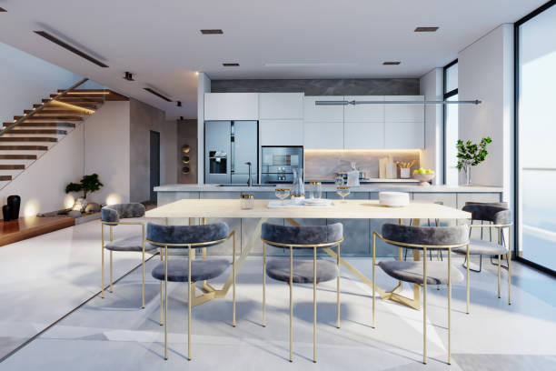
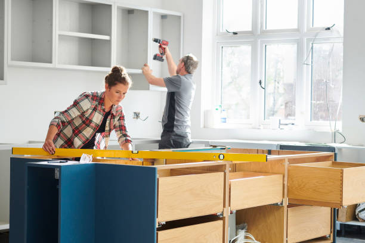
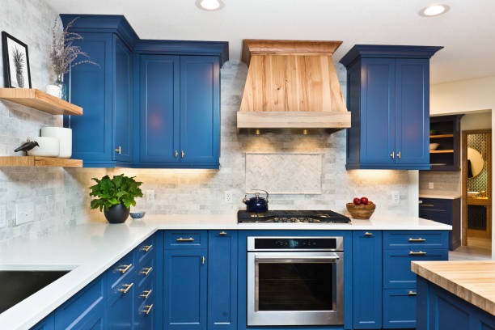

Head Of The Harbor New York
info@innovativeremodelingkb.pro
Head Of The Harbor New York
info@innovativeremodelingkb.pro

Transform your home with expert bathroom and kitchen remodeling in Head Of The Harbor New York . We create stunning, functional spaces tailored to your style and budget. Experience unparalleled craftsmanship and attention to detail!
Click Here To Call Us (877) 848-1711Looking to elevate the style and functionality of your home in Head Of The Harbor New York ? Our expert bathroom and kitchen remodeling services are designed to meet your needs. With years of experience, we take pride in delivering top-quality renovations that blend beauty, practicality, and durability. From modern bathroom makeovers to state-of-the-art kitchen upgrades, we’ve got you covered.
Why Choose Us for Remodeling in Head Of The Harbor New York ?
We understand that every home is unique. That’s why we offer tailored remodeling solutions that align with your style preferences and budget. Whether you desire a sleek, minimalist kitchen or a luxurious spa-like bathroom, our team works closely with you to bring your vision to life. Our skilled craftsmen use only premium materials and innovative techniques to ensure exceptional results that last for years.
Enhance Your Home's Value and Comfort
A remodeled kitchen or bathroom not only improves your living space but also boosts your property’s resale value. Our remodeling services in Head Of The Harbor New York focus on maximizing space efficiency, improving energy efficiency, and creating a more enjoyable environment for your family.
Ready to transform your home? Contact us today for a free consultation. Let our remodeling experts turn your bathroom and kitchen into spaces you’ll love to use every day. Experience the difference of working with a trusted company in Head Of The Harbor New York !
Residential & commercial Bathroom and Kitchen Remodeling
Quality services at affordable prices
Immediate 24/ 7 emergency services


Why Choose Us for Your Head Of The Harbor New York Bathroom and Kitchen Renovations?
When it comes to bathroom and kitchen renovations in Head Of The Harbor New York we are your trusted partner for transforming your home into a beautiful, functional space. Here’s why homeowners across Head Of The Harbor New York choose us for their renovation needs:
Expert Craftsmanship
Our team of skilled designers and contractors specializes in delivering top-quality bathroom and kitchen renovations. We take pride in our attention to detail, ensuring every project is completed with precision and care. Whether you’re looking to update your kitchen with modern appliances or transform your bathroom into a luxurious retreat, we have the expertise to bring your vision to life.
Customized Solutions
We understand that every home is unique. That's why we offer personalized design solutions tailored to fit your style, preferences, and budget. From contemporary to traditional designs, our team works closely with you to create a renovation that complements your lifestyle.
Timely and Affordable
At Bathroom and Kitchen Remodeling, we prioritize efficiency and cost-effectiveness. Our team works diligently to complete projects on time, without compromising on quality. We believe in transparent pricing and provide you with a detailed estimate before starting any work, so you know exactly what to expect.
Client Satisfaction Guarantee
Our commitment to customer satisfaction is at the core of everything we do. We listen to your needs and strive to exceed your expectations, ensuring you’re completely happy with the results. With our proven track record of successful bathroom and kitchen renovations across Head Of The Harbor New York you can trust us to enhance the beauty and functionality of your home.
Ready to start your bathroom and kitchen transformation in Head Of The Harbor New York ? Contact us today for a free consultation!
Residential & commercial Bathroom and Kitchen Remodeling
Quality services at affordable prices
Immediate 24/ 7 emergency services
Upgrading your countertops can refresh the look of your kitchen dramatically. We specialize in countertop upgrades with a vast selection of materials such as granite, quartz, marble, and more. Each material tells its own story, offering unique visual appeal and durability. Our expert team will help you select the right material that fits your functionality and aesthetic preferences. We ensure precise measurements and expert installations to create a seamless look. Choose us for your countertop upgrades, and enjoy a stunning transformation in your kitchen that combines beauty and long-lasting durability.

Sustainable living starts in the kitchen. Our eco-friendly kitchen remodeling services at Bathroom and Kitchen Remodeling are designed for those who want to make environmentally conscious choices. We incorporate sustainable materials, energy-efficient appliances, and innovative designs that minimize your carbon footprint. Our team understands the importance of blending sustainability with aesthetics, and we work hard to bring your vision to life without compromising on style or functionality. Let us help you create a greener kitchen that's both beautiful and eco-friendly, ensuring a better future for the planet.

A stylish backsplash can redefine your kitchen's look, adding visual interest and personality. At Bathroom and Kitchen Remodeling, we specialize in backsplash installation and upgrades that infuse your space with character. From classic tiles to modern materials, our extensive range allows you to customize your kitchen to match your personal style. We believe that backsplashes should not only be beautiful but also practical, protecting your walls from splashes and heat. Our dedicated professionals ensure precise installation, transforming your kitchen into a stunning masterpiece. With numerous successful projects in Head Of The Harbor New York we take pride in our craftsmanship and customer satisfaction. Why choose us? Our attention to detail, commitment to quality, and range of options make us the top choice for backsplash installations that elevate your kitchen.

Upgrade your kitchen with the latest appliances, enhancing efficiency and adding modern appeal. At Bathroom and Kitchen Remodeling, we specialize in kitchen appliance upgrades and integration, ensuring that your cooking space is both stylish and functional. We work closely with you to select appliances that fit your cooking style and aesthetic preferences while offering energy-efficient options that help you save on utility costs. Our experienced team handles the installation and integration seamlessly, ensuring that each appliance works harmoniously within your space. With years of experience we have earned a reputation for quality workmanship and attentive service. Why choose us? Our commitment to excellence and customer satisfaction ensures that your kitchen appliances enhance your culinary experience and transform your home.
Embrace the rustic charm of farmhouse kitchen designs with our expert remodeling services. At Bathroom and Kitchen Remodeling, we specialize in creating warm, inviting kitchens that feature elements like shiplap, farmhouse sinks, and vintage fixtures. Our team in Head Of The Harbor New York combines modern conveniences with classic designs to provide a kitchen space that feels both timeless and functional. Whether you want to renovate or completely remodel, we collaborate with you to ensure your farmhouse kitchen is uniquely yours. Let us help you create the perfect blend of comfort and style with our farmhouse designs.
Discover the beauty of simplicity with our modern minimalist kitchen designs. At Bathroom and Kitchen Remodeling, we believe that less is often more, and we specialize in creating sleek, functional kitchens that prioritize efficiency and elegance. Our modern minimalist approach embraces clean lines, neutral palettes, and uncluttered spaces, providing a serene cooking environment. We work closely with our clients to design spaces that reflect their personal style while ensuring maximum efficiency in layout and storage. With extensive experience in the Head Of The Harbor New York area, we have built a reputation for excellence and customer satisfaction. Why choose us? Our commitment to top-quality craftsmanship and innovative design ensures that your modern minimalist kitchen will be both beautiful and functional for years to come.

Step into the future with our smart kitchen technology integration services . Our team can help you incorporate innovative technology into your kitchen, from smart appliances to automated lighting and voice-activated systems. We work with you to choose the right technological solutions that not only enhance convenience but also improve energy efficiency and safety. Our goal is to create a modern kitchen environment that saves you time and adds value to your home. Trust us for expert guidance and installation to transform your kitchen into a smart culinary space.

Expand your living space with our outdoor kitchen construction services in Head Of The Harbor New York . Outdoor kitchens offer the perfect solution for entertaining guests while enjoying the beautiful outdoors. Our expert design team works with you to create a custom outdoor kitchen equipped with grills, sinks, refrigerators, and seating areas that fit your lifestyle. We use high-quality materials designed to withstand the elements while ensuring that your outdoor kitchen is both functional and stylish. Trust us to construct the outdoor kitchen of your dreams, making your home the ultimate entertaining venue.

Enhance the functionality and ambiance of your kitchen with our lighting and electrical upgrades. At Bathroom and Kitchen Remodeling, we understand the importance of proper lighting in creating a beautiful kitchen environment. Our team specializes in designing and installing lighting solutions that improve visibility, functionality, and ambiance. From task lighting and under-cabinet fixtures to decorative pendants and recessed lighting, we light up your kitchen in style. We also address any electrical upgrades needed to support modern appliances and technologies. With our extensive experience serving the Head Of The Harbor New York area, we take pride in providing reliable services and outstanding results. Why choose us? Our commitment to quality workmanship and customer satisfaction ensures that your kitchen lighting upgrades create the perfect atmosphere for cooking and entertaining.
Years Experience
Expert Technicians
Satisfied Clients
Compleate Projects
At Innovative Remodeling KB, we specialize in transforming kitchens and bathrooms into stunning, functional spaces that perfectly match your lifestyle and preferences. Serving Head Of The Harbor New York our team of skilled designers and craftsmen bring years of expertise to every project, ensuring top-quality results that exceed expectations.
What sets us apart is our commitment to customer satisfaction. From the moment you contact us, we prioritize your vision. Our team works closely with you, offering personalized design consultations that take your ideas and transform them into reality. Whether it's modernizing your kitchen with sleek countertops, custom cabinetry, or upgrading your bathroom with luxury fixtures and efficient layouts, we bring your dreams to life.
Our reputation for reliability and attention to detail is unmatched in Head Of The Harbor New York . We use only the highest quality materials and ensure precise, efficient work, completing every job on time and within budget. Our focus on sustainability means we also incorporate energy-efficient solutions that reduce utility costs while enhancing the comfort and beauty of your home.
Innovative Remodeling KB is proud to be your trusted remodeling partner in Head Of The Harbor New York . With a passion for craftsmanship and a dedication to creating functional, beautiful spaces, we are the go-to choice for homeowners looking to renovate their kitchens or bathrooms. Choose us, and experience the difference that quality, expertise, and customer-centric service can make in your home remodeling project.
In today's world, ensuring your bathroom reflects elegance and sophistication is paramount. At Bathroom and Kitchen Remodeling, we specialize in luxury bathroom remodeling that transforms your space into a personal retreat. With our expertise, we curate designs that not only meet your aesthetic desires but also address functional needs. We understand the importance of high-quality materials, innovative fixtures, and personalized designs. Our team stays updated with the latest trends in luxury spa-like features, freestanding tubs, and exquisite finishes. We pride ourselves in utilizing the best craftsmen and materials to elevate your bathroom experience. With a commitment to excellence and customer satisfaction, we guarantee that our luxury bathroom remodels will surpass your expectations while adding value to your home.
Transforming a small bathroom does not have to mean sacrificing style or functionality. Small bathroom renovations are an area where our design expertise shines. At Bathroom and Kitchen Remodeling, we understand the unique challenges posed by limited space, and we specialize in innovative solutions that maximize every inch. From clever storage solutions to space-saving fixtures, we work tirelessly to create a small bathroom that feels expansive and welcoming. Our team stays updated on the latest trends and technology, ensuring that each project incorporates modern convenience. With an emphasis on both aesthetics and practicality, we collaborate with you to produce a stylish sanctuary that meets your specific needs. Whether you're looking to refresh your decor or undertake a complete renovation, our experience makes us the ideal partner for your small bathroom project. Choose us for our dedication to quality, personalized service, and our track record of delighted customers.
Transforming your bathroom with a walk-in shower installation in Head Of The Harbor New York provides an elegant solution to enhance accessibility and style. Walk-in showers are not only functional but can also be a centerpiece of modern bathroom design. Our skilled installers use high-quality materials to create custom walk-in shower solutions that cater to your preferences. Whether you desire sleek glass enclosures, luxurious tiles, or innovative storage solutions, we have you covered. Our commitment to client satisfaction means we listen to your needs and deliver a flawless installation process, making us the go-to choice for walk-in shower installations .
Want to retire your old tub for a sleek shower? Our bathtub-to-shower conversions are the perfect solution for those seeking to maximize their bathroom space. We specialize in transforming underutilized bathtubs into modern showers that not only look great but also function efficiently. With various designs and fixtures, our experienced team will help you choose the best layout that suits your lifestyle and preferences. In Head Of The Harbor New York we pride ourselves on using high-quality materials and skilled craftsmanship, ensuring that your new shower is not only beautiful but also built to last. With our innovative designs and professional approach, enjoy a more practical bathing experience with our bathtub-to-shower conversions.
The vanity is often the centerpiece of a bathroom. Our custom vanity installations allow you to express your style while providing essential storage and functionality. We work with you to design a vanity that meets your needs, whether you prefer sleek modern lines or charming farmhouse aesthetics. Our attention to detail sets us apart; we ensure that your custom vanity integrates seamlessly with the overall design of your bathroom. From selection of materials to installation, our experienced team maintains the highest standards, ensuring you receive a product that is both beautiful and enduring.
A master bathroom should serve as your personal retreat. Our master bathroom remodeling services in Head Of The Harbor New York are centered around creating a space that combines luxury, comfort, and functionality. Our experienced team will guide you through the design process, helping to choose the right fixtures, finishes, and layouts that suit your lifestyle. Whether you dream of a spa-like atmosphere or a sleek modern aesthetic, we have the expertise to bring your vision to life. We pride ourselves on our attention to detail and commitment to quality, ensuring your master bathroom remodel is completed on time and within budget.
Powder rooms, often overlooked, offer a unique opportunity to showcase style and elegance. Our powder room renovations breathe new life into these compact spaces. We focus on smart design choices that maximize visual impact, utilizing high-quality fixtures, beautiful wallpaper, and stylish mirrors to pronounce elegance. Our expert design team knows how to pack a punch in smaller environments, ensuring your guests are greeted with a space that reflects your unique taste. Choose us for your powder room renovation and experience our commitment to creativity and detail.
The right tiles and flooring can radically change the look and feel of your bathroom. Whether you’re seeking to update your existing space with tile and flooring upgrades or redesign completely, Bathroom and Kitchen Remodeling offers expert solutions that cater to your needs. We provide a wide range of high-quality materials, from luxurious marble to practical ceramic options, ensuring a perfect fit for your style and budget. Our experienced team specializes in flooring layouts and tile designs that enhance aesthetics while ensuring durability and functionality. We take pride in using advanced techniques and offering first-class service, transforming your bathroom into a stunning area that reflects your taste. With our extensive experience in Head Of The Harbor New York you can trust us to provide meticulous installations that stand the test of time. Choose us for our commitment to excellence, affordable pricing, and exceptional customer service, making us the best choice for your tile and flooring upgrades.
For environmentally conscious homeowners, our eco-friendly bathroom remodeling services are designed to combine style with sustainability. Our team is knowledgeable about energy-efficient fixtures, water-saving technologies, and sustainable materials. From low-flow toilets to recycled glass tiles, we offer a range of options that help you reduce your environmental footprint without sacrificing aesthetics. By choosing our services, you can create a luxurious and eco-friendly bathroom that promotes sustainability. Our expertise ensures that you will achieve a beautiful bathroom while making a positive impact on the environment.
Accessibility should be a priority in every home. Our accessible bathroom designs follow ADA compliance guidelines, ensuring safety and usability for everyone. At Bathroom and Kitchen Remodeling, we specialize in creating bathrooms that are beautiful yet functional for individuals with mobility challenges. Our designs include features like grab bars, roll-in showers, and modified vanities to facilitate ease of use without sacrificing style. Our expertise allows us to seamlessly integrate these essential elements while ensuring the space remains inviting and modern. Create a safe, accessible retreat that caters to everyone in your home with our expert design work.
Indulge in relaxation with our spa-style bathroom transformations . Inspired by retreats and wellness centers, we focus on creating a serene and calming atmosphere in your home. Our skilled designers incorporate elements such as soaking tubs, rainfall showerheads, mood lighting, and natural materials to craft your personal spa oasis. We take your preferences into account to design a space that suits your lifestyle and promotes well-being. With our dedication to quality craftsmanship and attention to detail, we create spa-like experiences that are both luxurious and functional.
Lighting can dramatically affect the look and functionality of any space, especially the bathroom. Our bathroom lighting upgrades are designed to enhance both aesthetics and usability while creating the desired ambiance. At Bathroom and Kitchen Remodeling, we provide expert lighting solutions, designing a layered lighting plan that includes ambient, task, and accent lighting tailored to your preferences. Whether you desire elegant sconces, stylish pendant lights, or modern LED options, our experienced team will work with you to select fixtures that enhance your bathroom’s design. Our attention to detail and commitment to excellent service shine through each project we complete . Why choose us? We are dedicated to creating beautiful lighting setups that not only elevate your bathroom but also ensure convenience and comfort in your daily routine.
Transform your storage solutions with our custom bathroom cabinetry services . We understand that every bathroom requires unique storage options that marry functionality with design. Our custom cabinetry is tailored to your specific needs and space, allowing for an organized and attractive environment. With a variety of finishes and styles, we can create cabinetry that complements your bathroom aesthetic. Our expert craftsmen ensure the highest quality construction, guaranteeing that your new cabinets are practical and durable. Choose us to revolutionize your storage with beautifully designed custom cabinetry.
Plumbing can often be overlooked in bathroom renovations, but it’s vital to ensuring your bathroom remains functional and efficient. Our team at Bathroom and Kitchen Remodeling offers comprehensive bathroom plumbing upgrades that include the latest technology and solutions to improve performance and water efficiency. Whether it’s a complete repipe, fixtures replacement, or installing modern toilets and faucets, we ensure your system is up to date and compliant with local plumbing codes in Head Of The Harbor New York . Choose us for reliable and skilled plumbing upgrades that enhance the functionality and style of your bathroom.
A beautifully designed shower enclosure can elevate your bathroom's style while improving functionality. At Bathroom and Kitchen Remodeling, we specialize in stylish and durable shower enclosure installations that cater to various design preferences. Whether you prefer a sleek frameless glass enclosure or a traditional framed design, our experienced team works with you to determine the best solution for your space. We use premium materials and cutting-edge techniques to ensure your installation is flawless and built to last. Our dedication to craftsmanship and customer service has made us a trusted name bathroom renovations. Why choose us? We are committed to turning your vision into reality while providing professional and timely service to ensure your complete satisfaction.
The kitchen is often the heart of the home, and at Bathroom and Kitchen Remodeling, we specialize in custom kitchen remodeling tailored to your lifestyle and preferences. Our team in Head Of The Harbor New York works closely with you, beginning with understanding your specific needs, from layout optimization to choosing finishes that reflect your style. We pride ourselves on using durable, high-quality materials while staying on top of the latest design trends. Whether you envision a modern culinary space or a cozy traditional kitchen, trust us to bring your dream kitchen to life with precision and creativity.
Elevate your kitchen to new heights of luxury with our exceptional kitchen renovation services. At Bathroom and Kitchen Remodeling, we believe that your kitchen should not only be functional but also a reflection of your personal style. Our luxury kitchen renovations encompass high-end materials, exquisite finishes, and sophisticated design elements that transform your cooking space into a culinary masterpiece. Our team of skilled architects and designers collaborates closely with you to create a kitchen that embodies elegance and functionality. From elegant islands to state-of-the-art appliances, every detail is carefully selected to ensure a seamless blend of style and efficiency. With a strong portfolio of successful projects across Head Of The Harbor New York we have earned our place as the leading choice for luxury kitchen renovations. Why choose us? Committed to quality craftsmanship and customer satisfaction, we ensure your kitchen is tailored to your specific needs and lifestyle.
Don't let limited space restrict your design vision—our small kitchen makeovers are here to transform your compact kitchen into a stylish and efficient environment. At Bathroom and Kitchen Remodeling, we specialize in creative solutions that maximize storage and functionality while elevating the overall aesthetic of your kitchen. Our design team understands the unique challenges of small spaces, offering innovative ideas and custom solutions tailored to your needs. Whether it's optimizing corner cabinets, incorporating open shelving, or choosing the right color schemes, we ensure every inch is utilized wisely. With our extensive experience in Head Of The Harbor New York we guarantee high-quality craftsmanship and personalized service throughout your renovation journey. Why choose us? Our commitment to excellence, attention to detail, and passion for design make us the top choice for small kitchen makeovers that blend practicality and style.
Embrace modern living with our open concept kitchen designs that foster connectivity and space. At Bathroom and Kitchen Remodeling, we recognize that an open kitchen is perfect for entertaining and family interactions. Our experts specialize in creating layouts that seamlessly blend your kitchen with dining and living areas, ensuring a free-flowing, enjoyable space. We utilize innovative design techniques and high-quality materials to define new areas while maintaining an inviting ambiance. Transform your home into a modern oasis with our expertly designed open concept kitchens that enhance both space and togetherness.
A kitchen island can serve as a multifunctional centerpiece, providing extra workspace, storage, and a casual dining area. Our kitchen island installations are tailored to fit your needs and enhance your kitchen's flow. Whether you envision a large island for entertaining or a compact one for functionality, our team is dedicated to creating an ideal solution that complements your design. We ensure that each installation is done with precision, using high-quality materials that stand the test of time. Trust us to design and install an island that elevates your kitchen experience.
Custom cabinets can dramatically change the functionality and aesthetics of your kitchen. We specialize in designing and installing cabinetry that perfectly fits your space and style. Whether you prefer modern, classic, or contemporary finishes, our talented craftsmen and designers collaborate with you to create cabinets that reflect your taste while providing optimal storage solutions. With a focus on quality materials and craftsmanship, we guarantee durable constructions that enhance your overall kitchen experience. Choose us for custom cabinet design, and let us bring your visions to life.
At , we specialize in offering professional remodeling services tailored to meet the unique needs of homeowners in Head Of The Harbor New York . Whether you're looking to update a single room or embark on a complete home renovation, our team of experienced contractors ensures high-quality results every time. We understand that remodeling is a significant investment, which is why we prioritize your vision, budget, and timeline.
Our comprehensive remodeling services cover a wide range of home improvements, including kitchen and bathroom remodels, basement finishing, home additions, and custom designs. We work closely with you to bring your ideas to life while offering expert guidance on design, material selection, and functionality.
We use the latest industry techniques and cutting-edge technology to provide a seamless remodeling experience, ensuring your home renovation is completed to your exact specifications. Whether you want a modern, sleek kitchen, a spa-like bathroom, or more space to entertain, our tailored solutions will enhance the comfort, value, and appeal of your property in Head Of The Harbor New York .
With a commitment to customer satisfaction and a track record of successful projects, is the trusted choice for homeowners in Head Of The Harbor New York . Let us help you transform your home into the dream space you've always wanted. Contact us today for a consultation and take the first step toward making your remodeling vision a reality.
Head of the Harbor is a village in Suffolk County, on the North Shore of Long Island, New York, United States. The population was 1,472 at the time of the 2010 census.
Yes, we are fully licensed and insured to provide reliable bathroom and kitchen remodeling services .
Absolutely! Water Damage SanJose provides fully customizable kitchen designs to meet your specific style and functionality needs .
Yes, Water Damage SanJose has a portfolio of completed projects that you can review for inspiration in Head Of The Harbor New York .
Yes, we specialize in creating and installing custom cabinetry to suit your storage needs and style preferences .
Yes, we specialize in water damage repairs to ensure your remodeled bathroom or kitchen is safe and durable.
Yes, Water Damage SanJose has the expertise and resources to handle simultaneous kitchen and bathroom remodels .
Our commitment to quality, attention to detail, and exceptional customer service make us the top choice for remodeling .
We do! Water Damage SanJose offers sustainable materials and energy-efficient solutions for remodeling projects in Head Of The Harbor New York .
Our design team at Water Damage SanJose will guide you in selecting the best layout based on your space and lifestyle in Head Of The Harbor New York .
Yes, Water Damage SanJose specializes in converting bathtubs to walk-in showers for a modern and functional bathroom .
Yes, Water Damage SanJose partners with trusted local suppliers to ensure high-quality materials for all remodeling projects in Head Of The Harbor New York .
Simply contact Water Damage SanJose, and we’ll schedule a free consultation to provide a detailed quote for your project .
Yes, our expert designers can match or complement existing styles to maintain your home’s aesthetic .
You can call or visit Water Damage SanJose’s website to schedule a free consultation for your project .
Yes, Water Damage SanJose offers energy-efficient lighting, appliances, and materials to reduce utility costs in Head Of The Harbor New York .
Water Damage SanJose uses water-resistant materials and advanced sealing techniques to prevent water damage kitchens.
The timeline depends on the scope of the project, but most bathroom remodels by Water Damage SanJose in Head Of The Harbor New York take 2-4 weeks.
Yes, Water Damage SanJose offers emergency water damage services to address any unexpected issues during remodeling .
Yes, Water Damage SanJose offers solutions for bathrooms of all sizes, including small spaces, across Head Of The Harbor New York .
We recommend durable and water-resistant materials such as ceramic tiles, quartz countertops, and PVC panels for bathroom remodels .
Permits are often required for major renovations. Water Damage SanJose handles all necessary permits for projects .
Yes, Water Damage SanJose provides flexible financing plans to make your dream remodeling project more affordable in Head Of The Harbor New York .
Popular trends include open shelving, smart appliances, and minimalist designs, all of which Water Damage SanJose can incorporate into your kitchen .
Yes, Water Damage SanJose offers affordable options to help you achieve your desired bathroom remodel within your budget .
Yes, Water Damage SanJose offers comprehensive warranties on both materials and workmanship for projects .
Water Damage SanJose specializes in bathroom and kitchen remodeling, offering design consultations, custom installations, and water damage restoration services across Head Of The Harbor New York .
It’s recommended to update these spaces every 10-15 years, but Water Damage SanJose can help assess your specific needs in Head Of The Harbor New York .
Regular cleaning and proper ventilation will help maintain your remodeled bathroom by Water Damage SanJose .
Yes, we can integrate your existing appliances into the new design during kitchen remodeling .
The cost varies based on the size and materials used, but Water Damage SanJose provides free estimates for all kitchen remodeling projects .
Innovative Remodeling KB turned our old kitchen into something amazing! The team worked hard and was incredibly detail-oriented. I would definitely recommend them for any remodeling project in Head Of The Harbor New York !
Profession
Our bathroom looks amazing after the remodel by Innovative Remodeling KB. They paid attention to every detail and completed the project on time. Highly recommend them to anyone looking to remodel in Head Of The Harbor New York !
Profession
I couldn’t be more pleased with my kitchen remodel by Innovative Remodeling KB. The design process was seamless, and the crew was professional. Highly recommend their services in Head Of The Harbor New York !
Profession
Head Of The Harbor NY Bathroom and Kitchen Remodeling Pros
(877) 848-1711
info@innovativeremodelingkb.pro
09.00 AM - 09.00 PM
09.00 AM - 12.00 PM